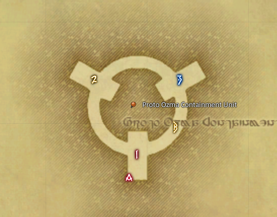

Ozma
- Remove tank marker.
- Setup markers at Ozma.
/p we are on platform 3, we go to the blackhole buffer on platform 3, we place meteors on 3 and C- Ready check.
- Kill Ozma.

Notes
- Tell party leaders to place markers
- Tell everyone not to jump down
- Wait for cutscenes and sacrifices
- Do ready checks for explanations
- Do explanations
- Check shells
- Ask for main tanks
- Ask for off tanks
- Ask for bleed baiters
- Magicite: Earth is offensive, Lightning is defensive. If you are a tank, please put yourself in defensive unless you know what you are doing.
- Do ready checks.
- Jump down.
- Check that every buffer has a party, wait for everyone to be back to their main platform.
- Do a pull timer (braveries, ranged/caster lb on 7, tanks pull on 4).
Explanations
- Blackhole
- Throughout the fight, Ozma will do some blackholes.
- When he does this, we must be standing on a blackhole buffer, or else we will get sucked out to Hydatos.
- The blackhole buffers are the blue circles you see around the arena.
- Each party is assigned to a blackhole buffer, and your party leader will show you to yours later when we jump down.
- If you do get sucked out, please stay in your party, otherwise the party will lose limit break.
- Knockback from Middle
- There will sometimes be a knockback from the blackhole buffer on the middle of the platform.
- If I say get knocked to the front, just stand on the front edge of the blackhole buffer.
- If you stand in the center, it is harder to control where you get pushed to.
- And if I say get knocked to the back, just stand on the back edge of the blackhole buffer.
- Meteors
- Two random players per platform will get a meteor.
- You will see a big dark AOE marker around your character.
- Meteors should be placed on the 1 and the 2 marker. That is to the back and to the right.
- You cannot know ahead of time which marker to go to, so you must look at the other player to see which marker they are heading for.
- Acceleration Bombs
- If you take a look in #ba-chat, you can see how the Acceleration Bombs look
- Acceleration Bombs go out when Ozma is in pyramid shape.
- If you get an Acceleration Bomb, you will see a counter above your head, and you will get a debuff.
- The debuff will show up next to your Ressurection Restricted debuff, which is the blue icon that can be seen in #ba-chat.
- If you are moving, attacking, emoting or anything when the counter reaches 0, you will explode and damage yourself and everyone around you.
- So if you get an Acceleration bomb, you need to untarget the boss and do nothing when the counter reaches zero.
- If you stay on the main platform, there is a chance you get a meteor while you have the Acceleration Bomb.
- To avoid this, if you have enough time left, you can move to the ring. When you are on the ring you cannot get a meteor.
- If you do get a meteor while you have an acceleration bomb, just focus on moving the meteor out. We can survive an Acceleration Bomb exploding, but meteors can wipe a platform.
- Orbs
- When Ozma changes to cube shape, 2 orbs will spawn on the rings.
- When the orbs spawn, the off tanks must run through the 2 orbs on their right.
- You can use mitigation, but you cannot use an invuln against the orbs.
- When orbs goes out, the rest of the party should move close to Ozma, to avoid the explosion from the orb.
- If you are on platform C you really need to hug ozma, since the first orb spawns very close to you.
- There are more mechanics in the fight, but I will call out where to move, so just follow the callouts and the party and you will be fine.
Timeline
- Star Shape
- Knockback
BlackholeSingle MovementDouble Movement- Star
- Meteors
- Knockback
- Shade + Knockback
BlackholeDouble Movement
- Cube
- Orbs
- Stackmarker + Holy Knockback
- Shade + Stackmarker + Holy Knockback
BlackholeDouble Movement
- Triangle
- Acceleration Bombs
- Meteors
- Shade + Acceleration Bombs
- Stackmarker
BlackholeDouble Movement